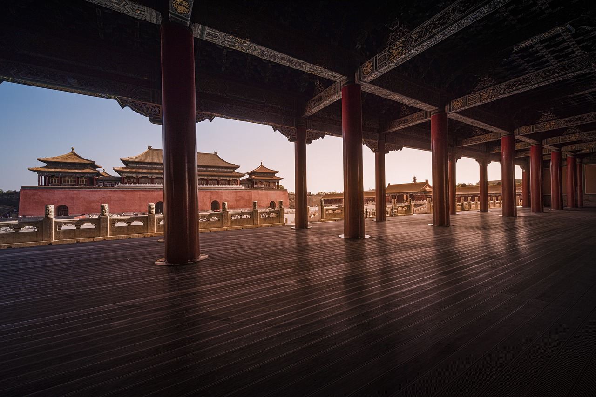

清朝之滅亡
淨空法師
清朝開國時，太祖努爾哈赤把葉赫那拉氏這個族群消滅了，當時這個族群的酋長說了一句話：「我族裡剩下一個女人也要報仇，也要把滿清消滅掉。」
過了兩百年，慈禧太后就是葉赫那拉氏的後人，所以慈禧太后是來報仇的。
從前的帝王也很聰明，宮廷裡面有祖宗立法，決定不許葉赫那拉氏的人進宮，不管是男子、女子，這表示他們已有防範了。
到了咸豐年間，因為距離的時間久了，大家也就沒有重視這個問題，慈禧進宮時，大家知道她是葉赫那拉氏族的人，但那時宮廷忽視了這件事，就讓她進宮了，所以，滿清滅在她的手上。
因此，不論一個國家、家庭或團體，冤親債主會很有耐心的等待，等你的運衰了，機會成熟了他就現前了。